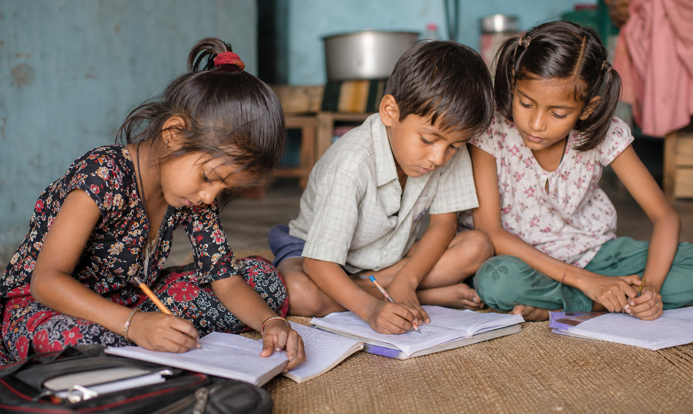
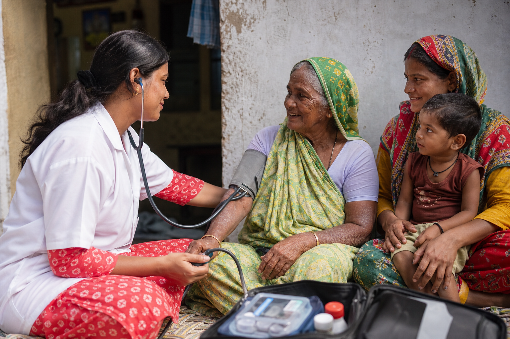
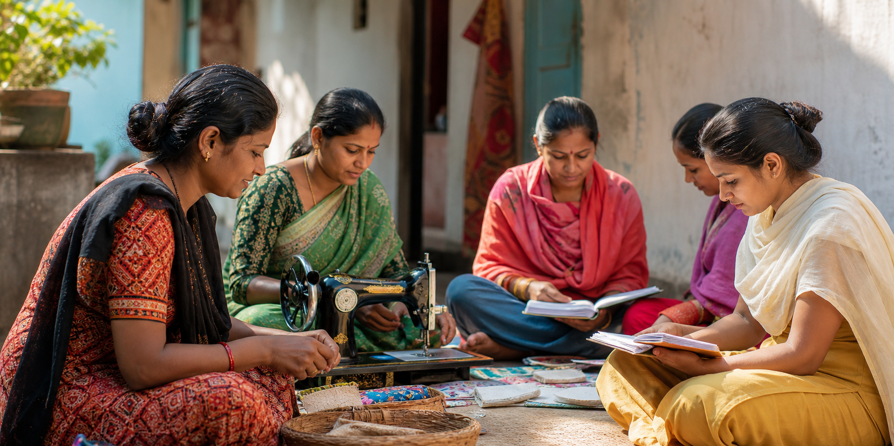
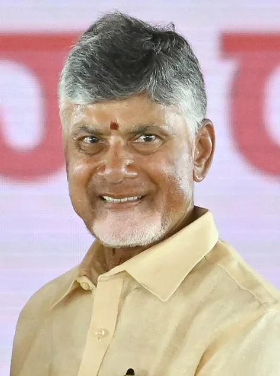

Education
From learning resources to school-linked support, the mission is to help children continue education with dignity.
Support Education ->A charitable trust helping donors and volunteers support education, healthcare, and community development programs in India and abroad.
Programs are built for India's real gaps: classroom access, health outreach, and community livelihoods.
From learning resources to school-linked support, the mission is to help children continue education with dignity.
Support Education ->Health outreach, primary screening coordination, and care guidance for people who need timely support.
Fund Healthcare ->Livelihood guidance, skills support, and community participation built with people, not just for them.
Build Communities ->Your support can help a child stay in school, help a patient reach basic care, and help families build a more stable life.

Books, learning resources, mentoring, and school-linked assistance can help children continue their education with dignity.
Support Education ->
Primary screening, medicine access guidance, and health outreach coordination can help families receive timely support.
Support Healthcare ->
Livelihood guidance, skills support, and community participation can help families build practical pathways forward.
Support Livelihoods ->These are the proof points first-time donors and volunteers look for before they act. CBN Trust is inspired by the public-service vision of Sri Nara Chandrababu Naidu.
CBN Trust's focus on education, healthcare, livelihoods, and community capacity complements the broader National Development Vision narrative: prosperous, skilled, healthy communities where no family is left behind.
Sri Nara Chandrababu Naidu, Public Leader, represents a development vision rooted in public service and India's long-term progress. Reference ->
